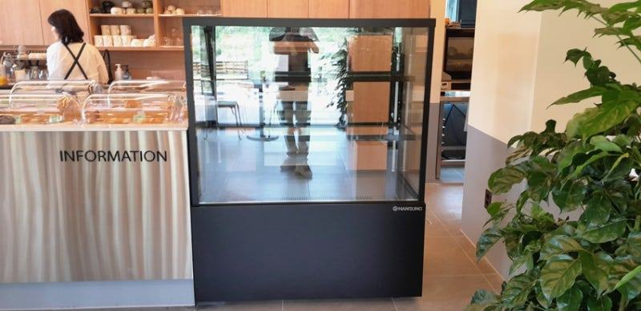
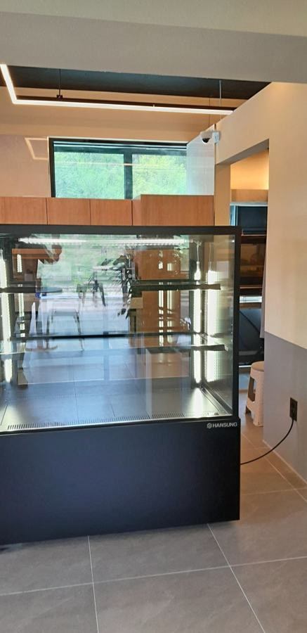
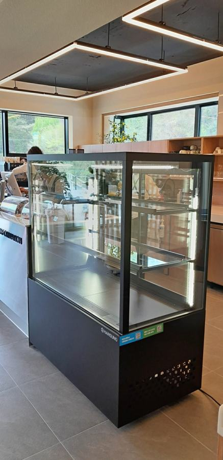
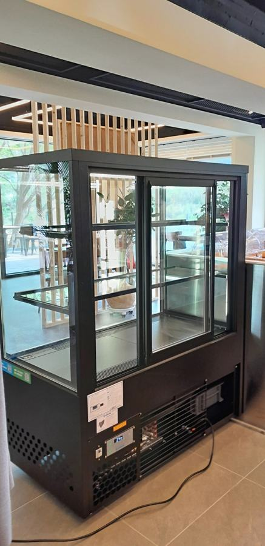
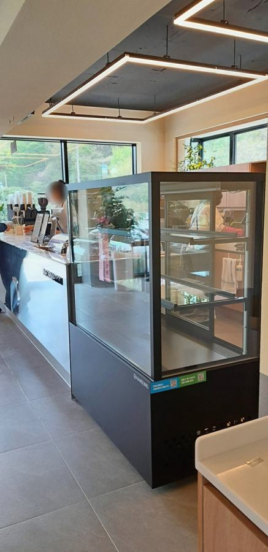
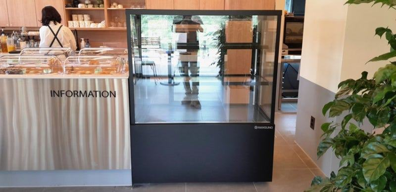
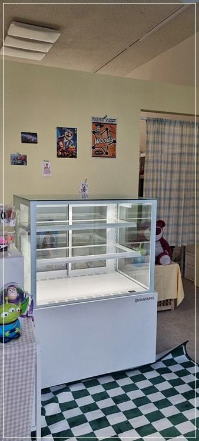

제과쇼케이스
제과쇼케이스 소음이 커졌을 때, 카페·베이커리 점검 순서

제과쇼케이스 소음이 커졌다면 기계실 주변 통풍, 응축기의 밀가루·먼지, 수평과 주변 기기와의 간격을 먼저 확인하세요. 이 세 가지를 바로잡아도 가동음이 쉬지 않고 이어지면 온도 컨트롤러와 콤프레셔 점검을 받으시는 게 맞습니다.
안녕하세요. 카페와 베이커리 매장에 맞춘 제과쇼케이스를 만들고 있는 한성쇼케이스입니다.
디저트 카페는 손님이 쇼케이스 바로 앞 테이블에 앉아 오래 머무는 공간입니다. 그래서 쇼케이스에서 나는 웅웅 소리나 떨림이 다른 업종보다 훨씬 크게 느껴지죠.
사장님도 하루 종일 그 옆에 서 계시니 피로감이 쌓입니다.
베이커리는 오븐, 에스프레소 머신, 제빙기처럼 열과 진동을 내는 기기가 쇼케이스 가까이에 모여 있다는 점도 다릅니다.
쇼케이스 자체 문제가 아니라 주변 환경 때문에 소리가 커지는 경우가 꽤 많습니다.
오늘은 제과쇼케이스 소리가 평소보다 커졌을 때 어떤 순서로 살펴보면 좋은지 정리해 드리겠습니다.
1. 기계실 주변 통풍부터 보기
제과쇼케이스는 카운터 안쪽에 끼워 넣거나 아래쪽을 가구로 감싸서 설치하는 경우가 많습니다. 이때 기계실 앞뒤로 공기가 빠져나갈 틈이 없으면 뜨거운 공기가 갇히고, 콤프레셔는 열을 빼내려고 더 오래 돌아가면서 소리가 커집니다.
오픈 이후에 카운터 아래 수납장을 새로 짜 넣었거나 박스, 포장 용기를 기계실 앞에 쌓아 두셨다면 그것부터 치워 보세요.
바로 옆에 오븐이 있다면 오븐 열기가 쇼케이스 기계실 쪽으로 흘러들지 않는지도 살펴볼 부분입니다.
- 기계실 통풍구 앞에 물건이 쌓여 있지 않은지 보세요.
- 오븐·커피 머신과 쇼케이스 사이 간격을 확인하세요.
- 카운터 하부를 막아 시공했다면 통풍구를 따로 내야 합니다.
2. 밀가루와 슈거파우더 먼지
빵을 굽는 매장은 공기 중에 밀가루와 슈거파우더 입자가 계속 떠다닙니다. 이 고운 가루가 응축기 핀에 달라붙으면 일반 먼지보다 더 촘촘하게 막히고, 습기와 만나면 떡처럼 굳기도 합니다.
응축기가 막히면 냉각이 더뎌지고 가동음은 길어집니다. 전원을 끈 뒤 부드러운 솔로 털어 내고 청소기로 빨아들이면 되는데, 젖은 걸레로 문지르면 가루가 반죽처럼 엉겨 붙으니 마른 상태에서 청소해 주세요.


3. 떨림 소리는 수평과 맞닿은 기기
쇼케이스가 조금만 기울어도 유리 선반이나 상단 유리가 콤프레셔 진동에 맞춰 미세하게 떨면서 짤랑거리는 소리를 냅니다.
케이크를 진열하는 유리 선반이 받침에 제대로 걸려 있는지, 선반 위 트레이가 서로 맞닿아 있지 않은지도 함께 확인해 보세요.
제빙기나 쇼케이스 옆 냉장고와 몸체가 붙어 있으면 두 기계의 진동이 겹쳐 더 크게 울립니다. 손가락 하나 들어갈 정도만 띄워도 소리가 확연히 줄어드는 경우가 있습니다.
4. 쉬지 않는 가동음은 점검 신호
위 세 가지를 다 정리했는데도 콤프레셔가 거의 쉬지 않고 돈다면, 문 패킹이 벌어져 냉기가 새고 있거나 온도 컨트롤러 설정이 바뀌었을 수 있습니다.
디지털 컨트롤러의 설정값을 확인하고, 문을 닫은 상태에서 패킹 사이로 종이를 끼워 쉽게 빠지는지 살펴보세요.
그래도 원인이 안 보이고 생크림 케이크 표면이 무르거나 유리에 물이 맺히기 시작한다면 기계 쪽 문제일 가능성이 큽니다.
이때는 무리하게 덮개를 열지 마시고 A/S를 접수해 주세요.
- 디지털 컨트롤러 설정 온도를 확인하세요.
- 문 패킹 틈에 종이를 끼워 밀착 상태를 보세요.
- 케이크 상태와 유리 결로를 함께 확인하세요.
체크리스트
- 기계실 통풍구 앞 적재물
- 오븐·커피 머신과의 간격
- 응축기 밀가루·슈거파우더 먼지
- 유리 선반과 트레이 떨림
- 컨트롤러 설정 온도와 문 패킹
현장에서 자주 보는 경우: 디저트는 예쁜데 쇼케이스가 흐리고 시끄러운 카페
케이크와 마카롱, 에끌레어를 정성껏 진열했는데 유리에 결로가 생겨 안이 흐릿하고, 조명이나 기계 소리가 매장 분위기와 어울리지 않는다는 상담을 자주 받습니다.
디저트는 보는 즐거움이 큰 상품이라 이런 작은 거슬림이 손님의 발걸음을 붙잡지 못하게 만들죠.
그래서 제과쇼케이스를 만들 때는 색상, 크기, 조명 톤을 매장에 맞추는 것과 함께 디지털 온도 컨트롤러, 고르게 도는 냉기 순환, 결로 방지, 유럽산 부품, 청소하기 쉬운 내부 구조를 같이 챙깁니다.
제품은 119가지 품질 테스트를 거쳐 출고되고, 사용 중 문제가 생기면 전국 240여 개 A/S 센터에서 대응합니다.







자주 묻는 질문
오픈 초기보다 소리가 커졌는데 정상인가요?
사용하면서 응축기에 먼지가 쌓이거나 주변에 기기가 늘어나면 소리가 커질 수 있습니다. 통풍과 청소 상태를 먼저 확인하고, 그래도 줄지 않으면 점검을 받아 보세요.
카운터 안에 매립하면 소음이 더 커지나요?
통풍 경로를 확보하지 않고 매립하면 열이 갇혀 가동음이 길어질 수 있습니다. 매립 설치를 계획하신다면 제작 단계에서 통풍구 위치를 함께 정하는 것이 좋습니다.
청소할 때 물을 써도 되나요?
내부 진열 공간은 물기를 꼭 짠 행주로 닦으셔도 됩니다. 다만 기계실 응축기는 전원을 끈 뒤 마른 솔과 청소기로만 청소해 주세요.
매장 조건에 맞춰 만드는 한성쇼케이스
원하시는 제품 사진과 설치할 공간 사진만 보내 주셔도 매장에 맞는 구성을 추천해 드립니다.
- 전국 240여 개 A/S 전담 센터 운영
- 본사 대량 자재 매입으로 품질 대비 합리적인 가격
- 유럽제·삼성 냉각 콤프레셔 적용
- 국내 최초 쇼케이스 전문 디자이너 상주
매장 폭과 원하는 진열 구성을 알려 주세요. 실측과 견적을 안내해 드립니다.
031-986-2458